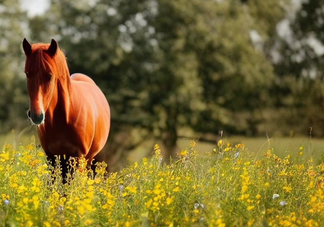
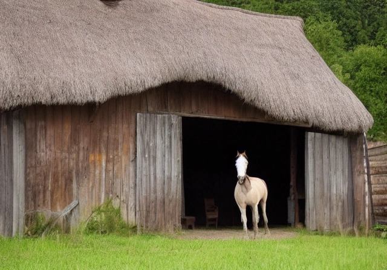

Experience the beauty of the French countryside on horseback with Roybon Horse Riding Company. Our experienced guides will take you on a journey through the rolling hills and picturesque villages of the region. Whether you are a seasoned rider or a beginner, we have the perfect horse for you.
Our horses are well-trained, well-cared for, and eager to take you on an adventure. We offer a variety of riding lessons and tours, from short trail rides to full-day excursions. Our guides are knowledgeable about the local area and will show you the best sights and sounds of the region.
Contact us today to book your horse riding adventure in Roybon, France.